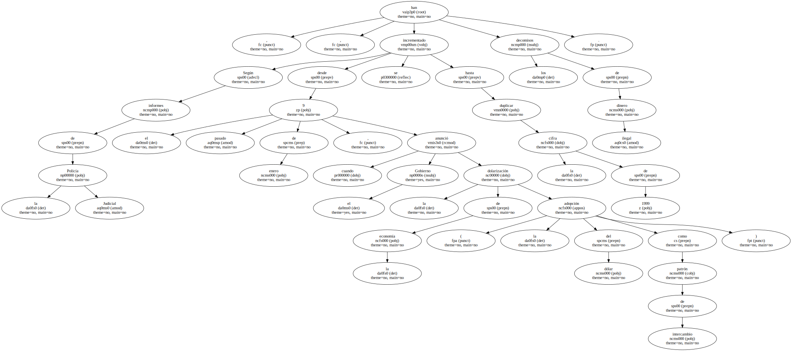
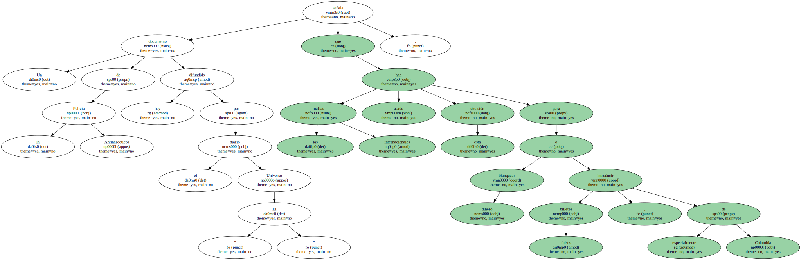
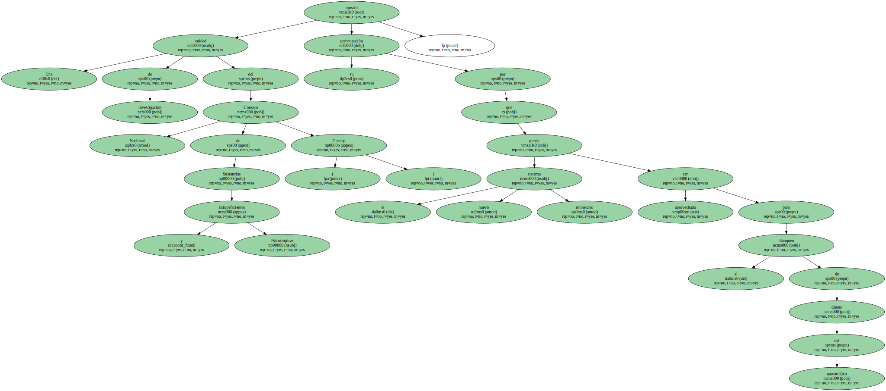
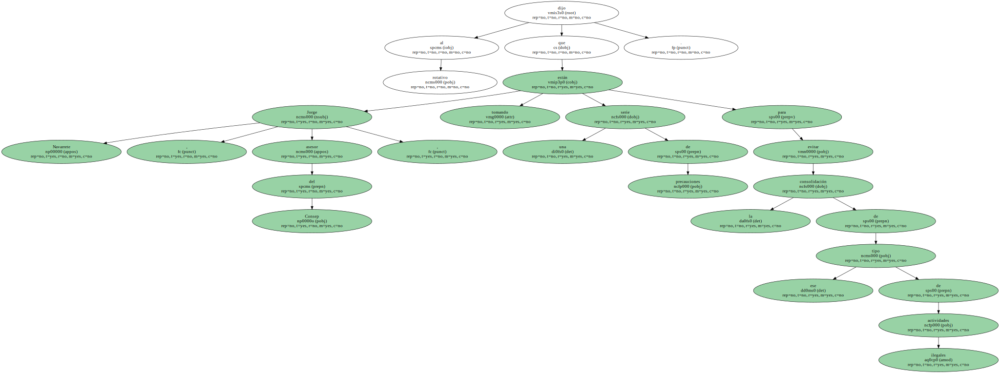
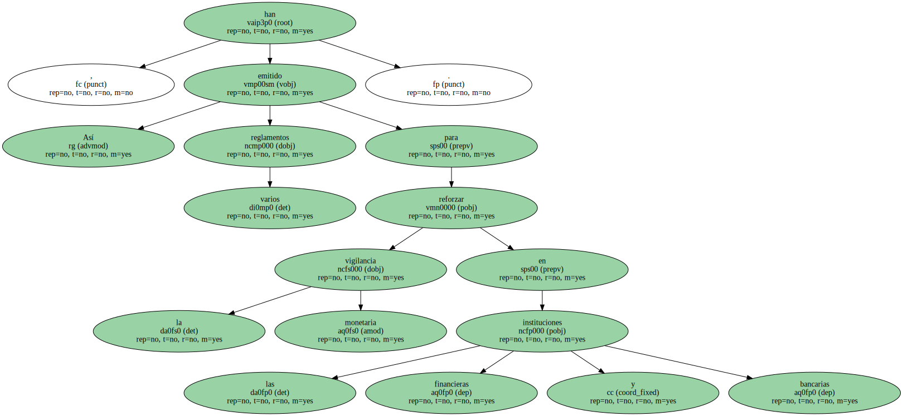
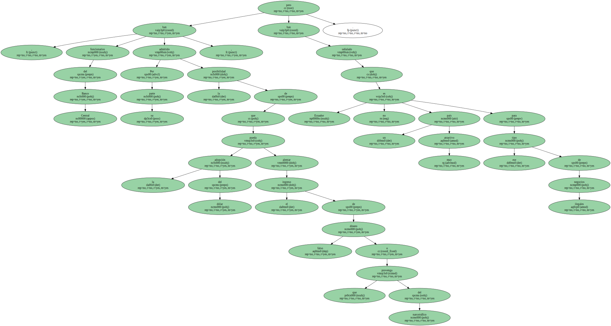
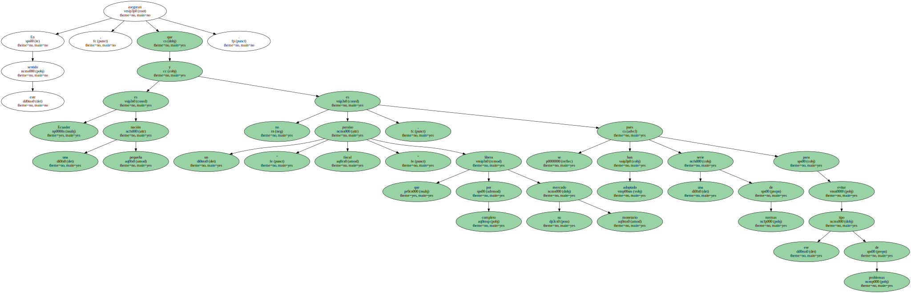

La Policía de Ecuador se incautó , en los últimos siete meses , de 1,18 millones de dólares falsos y teme que en el mercado local sigan circulando otros 500.000 , informó hoy , domingo , la prensa local.

Según informes de la Policía Judicial , desde el pasado 9 de enero , cuando el Gobierno anunció la dolarización de la economía ( la adopción del dólar como patrón de intercambio ) , se han incrementado los decomisos de dinero ilegal hasta duplicar la cifra de 1999.
Un documento de la Policía Antinarcóticos difundido hoy por el diario " El Universo " señala que las mafias internacionales han usado esta decisión para blanquear dinero o introducir billetes falsos , especialmente de Colombia.
Una unidad de investigación del Consejo Nacional de Sustancias Estupefacientes y Psicotrópicas ( Cosnep ) mostró su preocupación por que el nuevo sistema monetario pueda ser aprovechado para el blanqueo de dinero del narcotráfico.
Jorge Navarrete , asesor del Consep , dijo al rotativo que están tomando una serie de precauciones para evitar la consolidación de ese tipo de actividades ilegales.
Así , han emitido varios reglamentos para reforzar la vigilancia monetaria en las instituciones financieras y bancarias.
Por su parte , funcionarios del Banco Central han admitido la posibilidad de que la adopción del dólar pueda alentar el ingreso de dinero falso o que provenga del narcotráfico , pero han señalado que Ecuador no es un país muy atractivo para ese tipo de negocios ilegales.
En este sentido , aseguran que Ecuador es una nación pequeña y no es un " paraíso fiscal " que libera por completo su mercado monetario , pues se han adoptado una serie de normas para evitar ese tipo de problemas.
